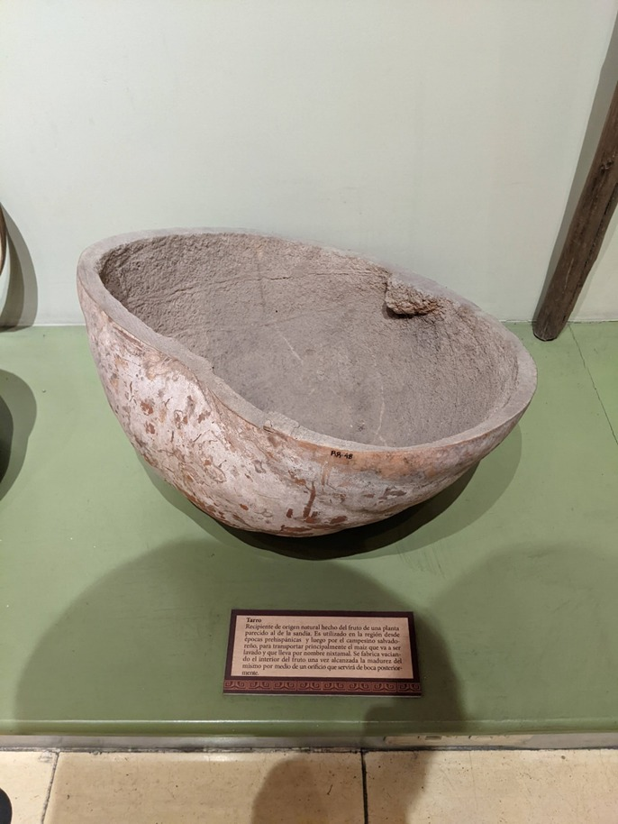

An instrument for agricultural use consisting of a flat blade placed on one end of a wooden stick at a ninety-degree angle. The Azadón is used in activities related to the preparation of the soil to be cultivated.
A type of “pointy digging bar” composed of a long wooden handle to which a metal blade is grafted on one of its ends to be used as a tool in agricultural work, to drill the soil to drop the seeds for cultivation
A long, cylindrical piece of wood ending in a point at one end. It is used to drill the soil and drop the seed to be cultivated. El chuzo is a remain of ancient cultivation techniques dating back to pre-Hispanic times.
(Classic and Postclassic period) 250 AD 1524 AD. A stone tool for agricultural use that, when positioned on the coa or chuzo, served as a weight for digging holes at the time of planting.
(Classic and Postclassic Period)250 A.D. 1524 A.D. Small stone that was used to crush and grind different materials.
(Classic and Postclassic Period)250 AD 1524 AD Cone-shaped stone artifact used as a crusher.
Corn was a vital plant for the development of civilizations in Mesoamerica. This figurine holds an ear of corn in her hands. It has a necklace and body ornamentation (tears on the face and scarifications on the arms) inspired by the grains of this plant. Period: Late Classic (600 - 900 A.D.)
flat holder tetrapod plate, cylindrical holders and curved divergent walls that show in the center of its decoration an anthropomorphic character with an elaborated clothing (topknot and loincloth). this main figure is surrounded by other anthropomorphic figures provided with ¨chuzos¨ and they are in the action of breaking the earth to deposit the seed. late classic period (650 A.C-1200 A.D)
This magnificent archaeological piece shows a band decorated with the ceramic technique named: excision, figures made of corn cobs, vital crop for the subsistence of the ancient villages of Mesoamerica. In its lower part shows the stylized figure of a bird, design made with the ceramic technique
named cera perdida possibly an eagle, an animal related to the power and regeneration of crops.
Monochrome coniform ceramic fragment with incised decoration that is a naturalistic representation of a ¨olote¨ residue of a corncob after being shelled. this fragment was probably part of another ceramic piece. corn is part of the basic diet of modern Mesoamerican peoples.
style: not determined
period: prehispanic
Huge piece obtained from a tree stump or carved in stone that is used to clean rice by hitting it with a mallet carved in wood. it is used throughout mesoamerica and by the people who inhabit the caribbean coast of central America. late classic period. (600-900 a. D).
Maize is at the base of the diet of Mesoamerican peoples. Many food products such as tortillas and tamales are made from corn. This crop has been joined by other crops brought by the Europeans when they arrived in these lands, such as corn.
Europeans when they arrived in these lands, such as rice and maicillo. Beans are also another of the most basic crops for the subsistence of Mesoamerican peoples.
It is an instrument that appeared 3,500 years B.C. in the civilizations of the Middle East. C. The peoples of Mesopotamia, located between the Euphrates and Tigris rivers. The rivers that fertilized the soil allowed the Assyrians and Chaldeans to engage in agriculture. They were the first to use the wheel and then the first plows were used. The very ancient drawings found in the form of cave paintings and engravings testify that the plow was one of the first tools used by sedentary man. by sedentary man. The plows handled by man took the name of mancera plow, which was so called, because it took the name of the plowtail it had, which was the curved piece where the plow was wielded. The plows were first made of wood or were formed by a branch of suitable shape and human traction. Sometimes they were made with branches in the form of a fork; they were pulled by an animal or a person to open the furrow of the land. About 3,000 years B.C. C. they began to use oxen to pull them. The Romans introduced the plow with an iron blade pulled by oxen. In the Middle Ages, ploughshares and blades began to be used on the hardest soils in Europe. The Rotherham plow was built in England in 1730 and its triangular shape made it easier to pull and better suited to be pulled by horses. It was built by the Dutchman Joseph Foljambe and marks the beginning of its industrial manufacture. The first plow built entirely of iron was made by the Englishman Robert Ransome in 1808. In France, in 1825, a blacksmith from Aisne, surnamed Fonduer, built the first metal plow with a front set. In the 1830s (some say 1837 to be more precise), the American blacksmith John Deere invented the steel plowshare. This was followed by the invention of the two-wheel plow with a driver's seat, and later by the disc plow, which appeared in 1847 in the United States; and another that was received with great success in Australia in 1877, constructed by John Shearer and Sons. And then, with the advent of the tractor, first steam, then gasoline, and today with the gasoline-powered, and today with the most up-to-date technologies, agricultural tasks have been greatly facilitated.
Container of natural origin made from the fruit of a watermelon-like plant. It has been used in the region since pre-Hispanic times and later by Salvadoran peasants to transport water during their daily work while they carry out their agricultural activities in the cornfield. It is made by emptying the interior of the fruit once it has reached maturity through an orifice that will later work as a mouth.
Container of natural origin made from the fruit of a watermelon-like plant. It has been used in the region since pre-Hispanic times and later by Salvadoran peasants to transport mainly the corn that is going to be washed and that is called Nixtamal. It is made by emptying the interior of the fruit once it has reached maturity through an orifice that will later work as a mouth.
Piece carved in stone in the form of a capsule in which water is deposited to be filtered to make it drinkable. It was probably made at the beginning of the 19th century.
Unlike pre-Hispanic ceramics, native of Mesoamerica, which did not have a glaze, the Spaniards introduced new ceramic production techniques, including glazing to waterproof ceramic artifacts. Pre-Hispanic ceramics were made with relatively simple techniques while the Spaniards introduced the potter's wheel and new aesthetic patterns
Made of bronze, copper, and tin alloy.
Important basis for commercial transactions to measure the volume of products during colonial and republican period.
Originally cast in iron and made from a single block, the irons have changed thinly from their original design. The one shown here was placed next to the stove to be heated and used later. They were later replaced by hollow irons in which embers were inserted, and in later years by the current electric irons.
Key Weights of 5 and 4 kilograms. The commercial system brought from Europe to America used the weights for their commercial transactions during the colonial era, even today the weights are used in commercial operations in the plazas and markets..
One factor that contributed to the colonization of pre-Columbian America was the use by Europeans of horses and other beasts of burden, unknown until then to the ancient American settlers. Shown here are two horseshoes whose use is still maintained in the towns of the Salvadoran territory where motorized transport does not reach.
Instrument used for grains (coffee, beans, corn, etc.). Quite popular at the beginning of the 20th century, before the arrival of the scales that became very common in coffee farms in the second half of the 20th century